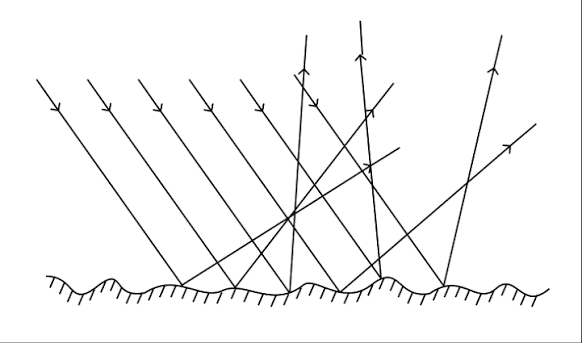

探
本節探究 鏡子裡的人是「真的在鏡子後面」嗎？
用反射定律檢驗成像位置
照鏡子看到自己；湯匙背面的臉變小，凹面可能放大或倒立。先預測：平面鏡的像是實像還虛像？左右會不會相反？下面三站用反射定律檢驗成像位置。
探究問題：鏡子裡的人是真的在鏡子後面嗎？紙屏接得到那個像嗎？
用反射定律檢驗成像位置
照鏡子看到自己；湯匙背面的臉變小，凹面可能放大或倒立。先預測：平面鏡的像是實像還虛像？左右會不會相反？下面三站用反射定律檢驗成像位置。
入射線、法線、反射線
探究線索：法線永遠垂直界面。如果入射角變大，反射角會跟著變大還變小？兩條線和法線是否共平面？
光線碰到界面後返回原來介質，稱為 。
入射線與鏡面夾 60° 時，入射角＝90°－60°＝30°。
入射角 i ＝ 反射角 r
國中最常錯：把「光線和鏡面的夾角」當成入射角。記住：入射角、反射角都是跟法線夾的角。法線一定垂直鏡面。所以「和鏡面夾 60°」→ 入射角＝30°。
橘色＝入射線；藍色＝反射線。虛弧標「與鏡面 60°」，實弧標入射角／反射角 30°。
用鏡子實驗把「入射角＝反射角、跟法線夾角」看到眼裡；和讀圖技巧對照更不容易搞錯。
來源：LIS 科學放大鏡 EP02 ｜ 對照反射定律與法線
這一站的證據：入射角＝反射角，且與法線共平面。下一站問：把反射線反向延長，交點是實像還虛像？
兩種都遵守反射定律
鏡面反射：平行光打到光滑表面，反射後仍近似平行，能成清晰的像。
漫反射：平行光打到粗糙表面，反射向四面八方，不能成清晰的像，但我們仍看得到物體。
光滑平面：平行入射光反射後仍近似平行

粗糙表面：平行入射光反射向四面八方（仍遵守入射角＝反射角）
黑板、牆壁、衣服表面都不夠光滑，平行光打上去會向四面八方反射，這叫漫反射。正因為光往各方向走，教室裡每個位子都看得到黑板。如果牆壁像鏡子一樣光滑，就只會在特定角度看到刺眼的像，其他位子反而一片暗。
兩種反射都遵守「入射角＝反射角」，差在粗糙面上每一小塊的法線方向不一樣，所以整體看起來是「亂射」。
1. 能成清晰像的是 。
2. 漫反射 遵守反射定律。
等大、正立、左右相反的虛像
探究線索：把紙屏放在鏡子「後面」，接得到像嗎？鏡子裡的距離看起來和人到鏡子一樣遠嗎？
我們看見鏡中的像，是物體發出的光經平面鏡 進入眼睛。把反射線反向延長，交點就是像的位置。
實線＝真實光線；鏡後虛線＝反射線反向延長。物距＝像距，人到像＝2×物距。
國中常考：平面鏡大約只要身高的一半，就能看到全身（頭頂和腳的光線在鏡面中央附近反射進眼睛）。鏡子裂成好幾塊再拼回同一個平面，仍只成一個像，因為還是同一面平面鏡。
橘線＝往鏡走；藍線＝反射進眼。上、下撞鏡點之間就是「剛好夠看全身」的最短鏡面。
1. (
) 平面鏡成像是因為光的直線前進。
訂正：
2. (
) 平面鏡的像是上下顛倒。
訂正：
3. (
) 離鏡子愈遠，像的實際大小愈小。
訂正：
1. 把紙上的「bd」面向平面鏡，鏡中看到的是 （A）bd （B）db （C）pq （D）qp →
2. 宗翰站在平面鏡前 2 m 與 10 m，全身像的實際大小 （A）2 m 處較大 （B）10 m 處較大 （C）一樣大 （D）要視鏡子大小 →
3. 小華在鏡前 3 m，鏡中電子鐘顯示 21:51，實際時間是 。
4. 小華往鏡前走 1 m，他與像的距離為 m。
5. 小華不動，鏡子往後移 2 m，他與像的距離為 m。
這一站的證據：平面鏡成等大正立虛像，左右相反，像距等於物距，紙屏接不住。下一站比較凸面鏡與凹面鏡。
兩面鏡子夾角為 θ，且 360° 能被 θ 整除時，像的個數大約是 360°÷θ － 1。
1. 電梯左右兩側鏡子互相平行，鏡中小華的像有 （A）1 （B）2 （C）3 （D）無限多 →
2. 平面鏡裂成 5 塊再拼回同一平面，物體成像個數為 （A）0 （B）1 （C）5 （D）無限多 →
凸面鏡視野廣；凹面鏡可聚光、可放大
探究線索：後視鏡為什麼常用凸面鏡？化妝鏡為什麼常用凹面鏡？光線會聚時比較容易成實像還虛像？
成像性質： 。 觀察範圍會 （減少死角）。
平行光射向凸面鏡，反射線的延長線交於鏡後 。
主軸：通過鏡面中心且垂直鏡面的直線。 焦點：平行主軸的光經凹面鏡反射後交會的一點。焦點到鏡面的距離稱為焦距。
物體離凹面鏡較近（焦點內）時，成 （化妝鏡）。離得較遠時，會成倒立的像。
| 物體位置 | 成像 |
|---|---|
| 焦點內 | 正立放大虛像（鏡後） |
| 焦點與兩倍焦距間 | 倒立放大實像（同側） |
| 兩倍焦距外 | 倒立縮小實像（同側） |
1. (
) 凸面鏡可以增加視野廣度。
訂正：
2. (
) 曲面鏡成像是利用光的反射。
訂正：
3. (
) 凹面鏡所成的像必為正立。
訂正：
1. 探照燈要把光平行射出，應使用 （A）凹面鏡、焦點 （B）凹面鏡、主軸任一處 （C）凸面鏡、焦點 （D）凸面鏡、主軸任一處 →
2. 何者不是凸面鏡成像與原物的差異？ （A）左右相反 （B）上下顛倒 （C）縮小 （D）虛像 →
3. 減少盲點、擴大視野： （甲平面鏡、乙凸面鏡、丙凹面鏡）。
4. 三種面鏡成像都利用反射： 。
5. 能成比物體大的像： 。
6. 能成虛像： 。
7. 物體在凸面鏡兩倍焦距外，成像仍為 （A）正立縮小虛像 （B）正立放大虛像 （C）倒立縮小實像 （D）倒立放大實像 →
這一站的證據：凸面鏡永遠正立縮小虛像、視野廣；凹面鏡可會聚，近處可當放大鏡。收成速記後，就能回答本節問題。
證據卡：這些句子用來支撐下面的「本節主張」。先對照面鏡成像，再決定你同不同意。
| 面鏡 | 記住這句 |
|---|---|
| 平面鏡 | 等大正立左右相反虛像；物距＝像距 |
| 凸面鏡 | 永遠正立縮小虛像；視野變廣 |
| 凹面鏡（近） | 正立放大虛像（化妝鏡） |
| 凹面鏡（遠） | 倒立實像；焦點可平行出光 |
反射定律決定像在哪裡
光碰到界面會反射：入射角＝反射角，且與法線共平面。平面鏡成等大正立虛像，左右相反，像距等於物距。凸面鏡成正立縮小虛像、視野廣；凹面鏡可會聚光線，近處可當放大鏡。
下一站要問：泳池為什麼看起來比較淺？ 先用下面練習檢驗你的主張。
基本題 5 題 ＋ 進階題 5 題
檢驗主張：做題時對照本節問題——鏡子裡的人是真的在鏡子後面嗎？
1. 反射定律：入射角 反射角；法線垂直於鏡面。
2. 平面鏡成像為等大、正立、左右相反的 ， 且物距等於像距。
3. 凸面鏡不論物距，都成正立 虛像，視野變廣。
4. 物體靠近凹面鏡（焦距內）時，成正立 虛像，例如化妝鏡。
5. 汽車後視鏡、路口轉角鏡常用 來擴大視野。
1. 人站在平面鏡前 2 m，像到人的距離為 m。
2. 探照燈、手電筒要把光平行射出，應把光源放在 的 。
3. 物體在凸面鏡兩倍焦距外，成像仍是正立縮小 。
4. 兩片平面鏡夾角 90°，物體的成像數為 個。
5. 平面鏡、凸面鏡、凹面鏡成像都利用光的 。